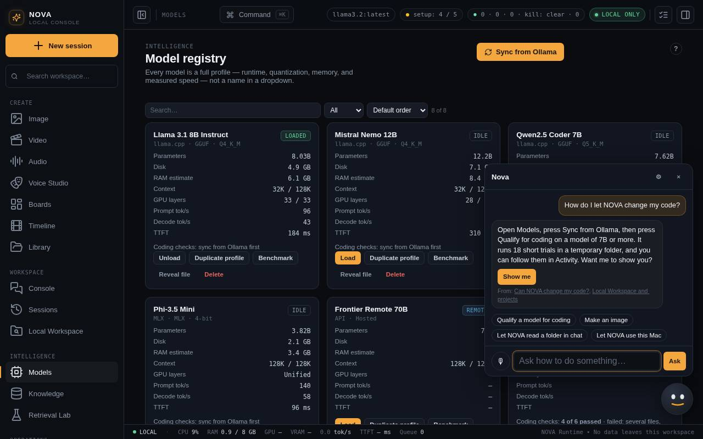
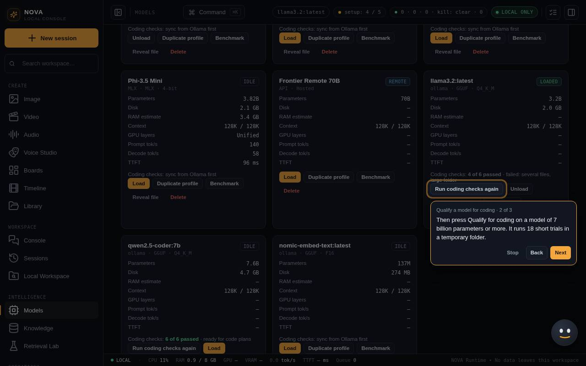
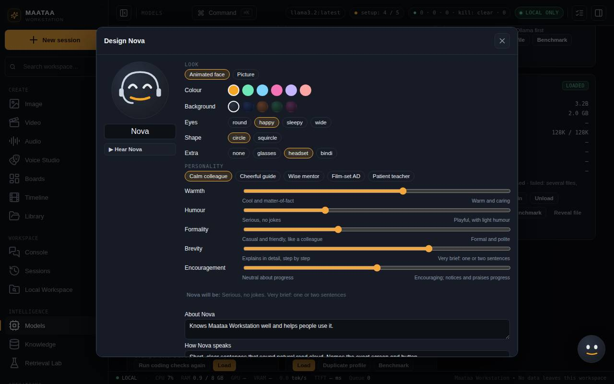

The helper
The face in the bottom right corner. Ask it how to do anything, hold its mic to talk, or let it walk you through a task step by step on screen.
The face in the bottom right corner is Maataa's helper. Think of it as a colleague sitting next to you who knows Maataa well: ask it how to do something and it answers in a sentence or two, out loud if you like, and can show you the way.

Ask
- Click the face, type a question and press Ask, for example "how do I let Maataa change my code?".
- Or hold the 🎙 button, speak, and let go. Your voice is turned into text on this Mac (it needs whisper.cpp, like the microphone in chat). Talking while the helper is speaking cuts it off, as you would with a person.
- The helper knows which screen you are on, and answers from Maataa's own help guides. Under each answer, From: links to the guides it used.
- The face shows what it is doing: a red pulse while it listens, a turning ring while it thinks, and its mouth moves while it talks.
Show me
When it helps, an answer ends with a button:
- Show me starts a walkthrough. Maataa opens the right screen, dims everything else and points at one control at a time with a short note (read aloud if you like). Next, Back and Stop, or press Esc.
- Open … goes to the screen it mentioned.
The chips under the conversation start walkthroughs directly: qualify a model for coding, make an image, let Maataa read a folder, let Maataa use this Mac, talk to Maataa, let agents open a website, give an agent a personality, and set up images.

What it will not do
The helper explains and shows; it never presses buttons, changes settings or touches files itself. If it is not sure, it says so and suggests Help & Support. It runs on your local model, so an answer takes a second or two while the face shows it is thinking.
Design Nova's look and personality
Press ⚙ in the helper, then Design look & personality…. The same designer opens from Look & personality… in Voice Studio for any character.

Look
- Animated face: choose a colour, a background, eyes (round, happy, sleepy, wide), a shape (circle or squircle) and an extra (glasses, headset or bindi). The face blinks, looks up while thinking, and its mouth follows the voice.
- Picture: press Make a picture to draw a portrait with ComfyUI from the name and personality (add a description if you like), or Upload your own. While Nova speaks, the picture moves with the voice.
Personality
- Start from a preset: Calm colleague (the original), Cheerful guide, Wise mentor, Film-set AD or Patient teacher.
- Fine-tune five sliders: Warmth, Humour, Formality, Brevity and Encouragement. The line under the sliders shows how Nova will come across. A slider in the middle says nothing either way.
- Add About Nova and How Nova speaks in your own words, the language, and the usual delivery (calm, warm, joyful and so on).
- ▶ Hear Nova plays a sample in Nova's voice. The voice itself is chosen in Voice Studio (the usual app voice by default).
Press Save. Reset to original brings back the original Nova. Nova is built in, so it cannot be deleted. Traits change tone and wording only, never facts, safety rules or what the helper may do.
Settings
Press ⚙ in the helper:
| Setting | What it does |
|---|---|
| Read answers aloud | Speak answers and walkthrough notes (on by default) |
| Tell me when something needs attention | Off by default. When on, the helper mentions only real changes: ComfyUI stopped and could not restart, Maataa was halted, or coding checks finished |
| Helper character | Nova (as you designed it), or a Voice Studio character's name, face, personality and voice |
| Hide the helper | Removes the face. Bring it back in Settings > Helper |